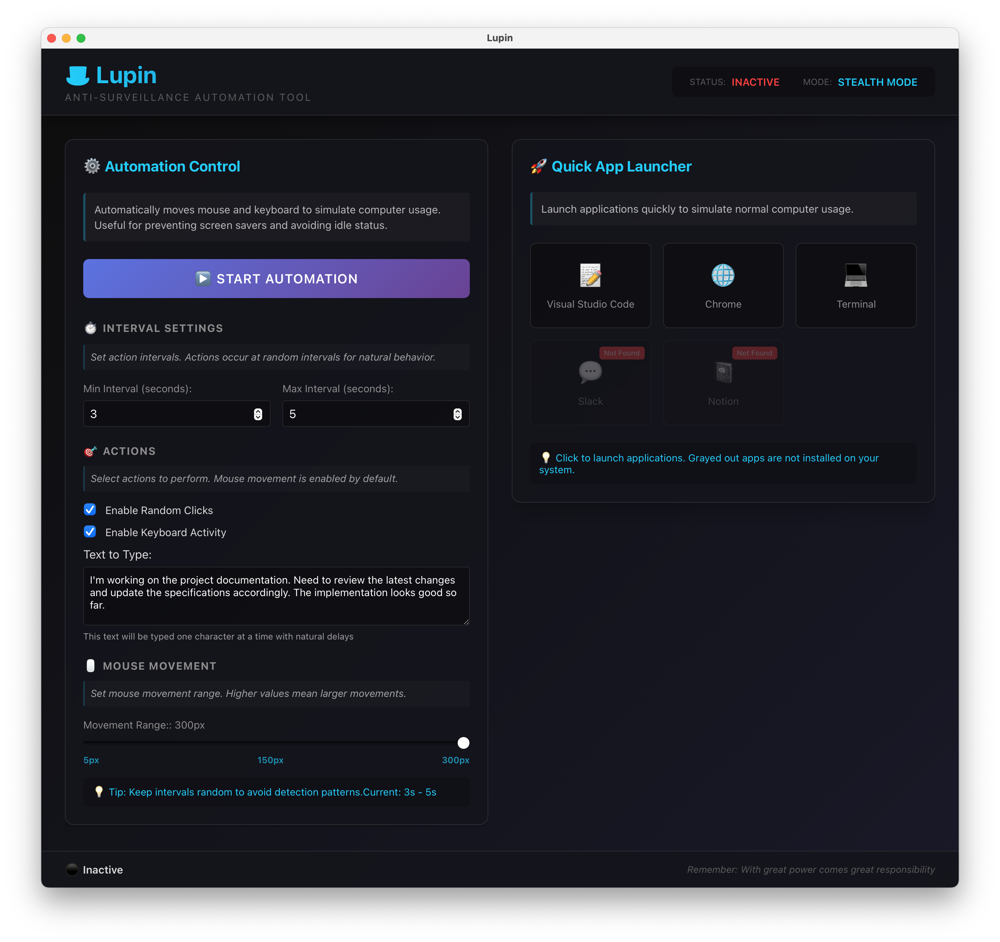

Lupin
지정한 시간 간격으로 마우스를 움직이고, 문장을 타이핑하는 자동화 도구입니다.
일정 시간마다 자동으로 마우스를 움직여 화면 보호기나 자리 비움 상태를 방지합니다. 설정한 텍스트를 주기적으로 입력하여 반복적인 타이핑 작업을 자동화할 수 있습니다.
간단한 UI로 시간 간격과 동작을 쉽게 설정할 수 있으며, 필요시 즉시 시작하거나 중지할 수 있습니다.
GitHub
지정한 시간 간격으로 마우스를 움직이고, 문장을 타이핑하는 자동화 도구입니다.
일정 시간마다 자동으로 마우스를 움직여 화면 보호기나 자리 비움 상태를 방지합니다. 설정한 텍스트를 주기적으로 입력하여 반복적인 타이핑 작업을 자동화할 수 있습니다.
간단한 UI로 시간 간격과 동작을 쉽게 설정할 수 있으며, 필요시 즉시 시작하거나 중지할 수 있습니다.
GitHub